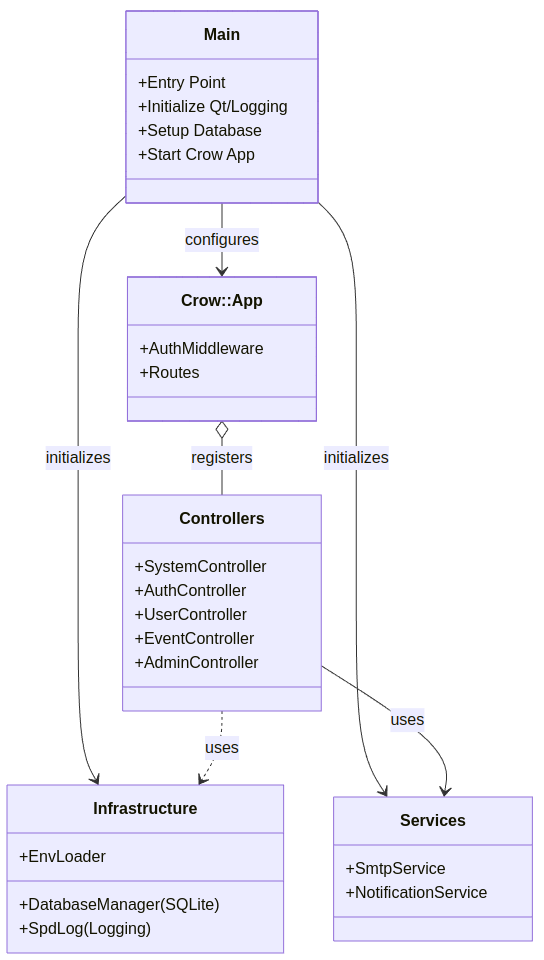
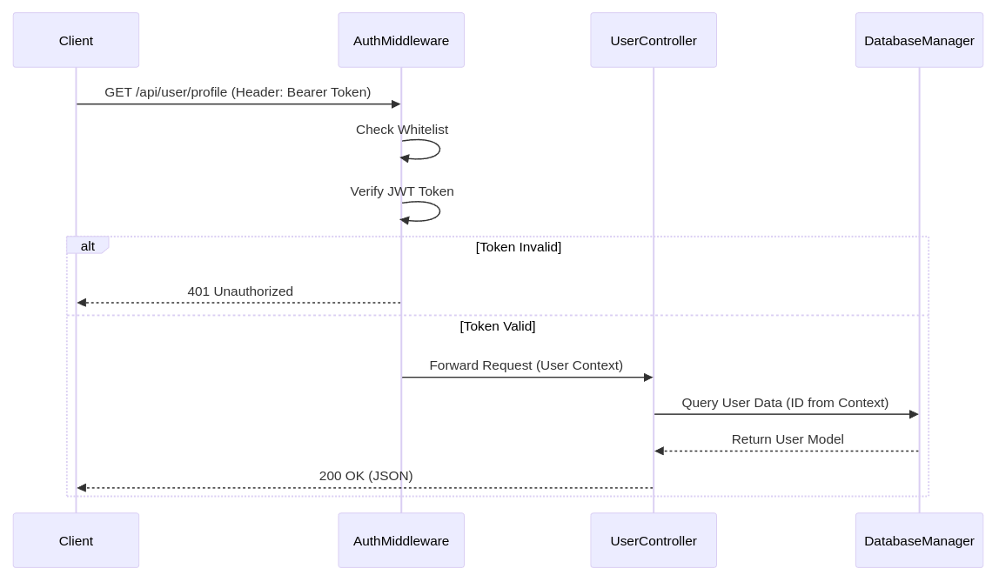

Crow Server Architecture
This document describes the architecture of the Cake Planner Backend, which is built using the Crow C++ microframework.
Overview
The server acts as a RESTful API backend providing services for the Cake Planner frontend. It manages user authentication, event planning, and system administration. The application relies on Qt for core functionalities (Event Loop, Strings) and SQLite for data persistence.
High-Level Architecture
The following diagram illustrates the high-level components and their interactions:

Key Components
1. Entry Point (src/main.cpp)
The main.cpp file is the bootstrap of the application. It performs the following steps:
- Environment Loading: Loads configuration from
.envfile viarz::utils::EnvLoader. - Logging: Initializes
spdlogwith console and rotating file sinks. - Database: Initializes
DatabaseManagerand runs migrations. - Services: Instantiates
SmtpServiceandNotificationService. - Crow App: Configures the Crow application with
AuthMiddleware. - Routing: Registers all controllers (
System,Auth,User,Event,Admin). - Server Start: Starts the Crow server in a separate thread while the main thread runs the Qt Event Loop (
QCoreApplication).
2. Middleware
The server uses a custom AuthMiddleware to secure API endpoints.
- File:
include/middleware/auth_middleware.hpp - Functionality:
- Intercepts every request.
- Checks for a whitelist of public URLs (e.g.,
/api/login,/static/). - Validates the
Authorization: Bearer <token>header. - Verifies the JWT token using
rz::utils::TokenUtils. - Injects the current user (
TokenPayload) into the request context.
3. Controllers
Controllers organize the request handling logic. All controllers are located in include/controllers/.
| Controller | Purpose | Dependencies |
|---|---|---|
SystemController |
System status, health checks, version info. | None |
AuthController |
Login, registration, password reset. | NotificationService |
UserController |
User profile management. | NotificationService |
EventController |
Event creation, listing, updates. | NotificationService |
AdminController |
Administrative tasks (user management). | NotificationService |
4. Database Integration
Data persistence is handled by DatabaseManager (Singleton).
- Database: SQLite (
cakeplanner.sqlite). - Pattern: The application likely uses DAO (Data Access Object) or direct model mapping within services/controllers to interact with the database manager.
- Migration: Automatic migration checks run at startup.
Request Flow
The following sequence diagram demonstrates the flow of an authenticated API request (e.g., "Get User Profile"):

Configuration
The application uses a dual configuration strategy:
rz_config.hpp: Compile-time constants (Version, Application Name)..envFile (Runtime):CAKE_SERVER_PORT: Port to listen on (default: 8080).DB_DIR: Path to the SQLite database.LOG_LEVEL: Logging verbosity (debug,info,warn,error).UPLOAD_DIR: Directory for file uploads.
Signal Handling & Shutdown
The server handles SIGINT (Ctrl+C) and SIGTERM gracefully:
- Signal is caught by
signalHandler. shutdownHandlerlambda is invoked.app.stop()stops the Crow server.qtApp.quit()exits the Qt Event Loop.- Logs are flushed and resources cleaned up.